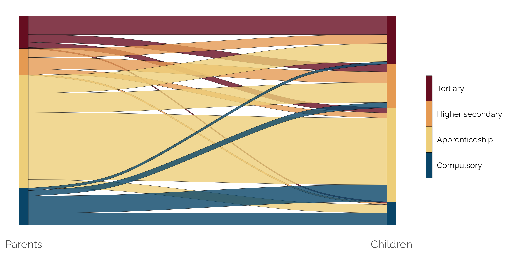
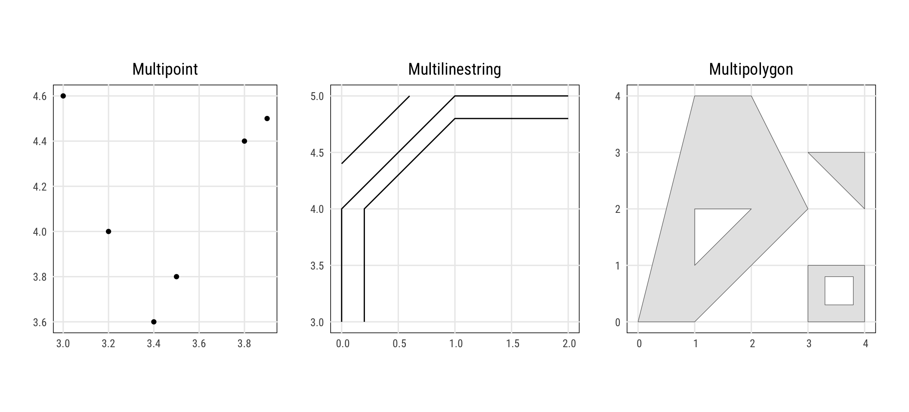
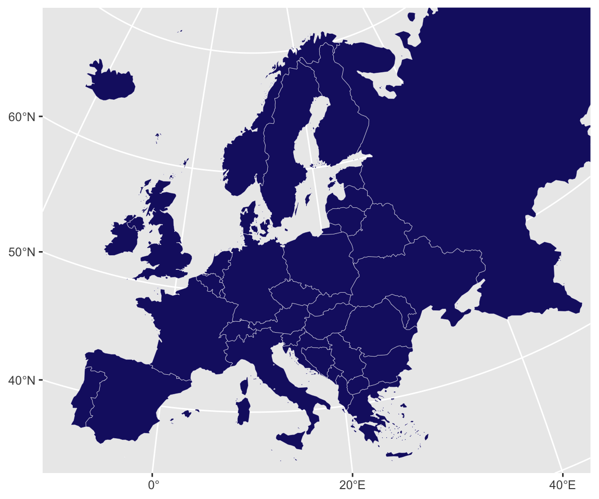

── Attaching core tidyverse packages ──────────────────────── tidyverse 2.0.0 ──
✔ dplyr 1.1.2 ✔ readr 2.1.4
✔ forcats 1.0.0 ✔ stringr 1.5.0
✔ ggplot2 3.4.3 ✔ tibble 3.2.1
✔ lubridate 1.9.2 ✔ tidyr 1.3.0
✔ purrr 1.0.2
── Conflicts ────────────────────────────────────────── tidyverse_conflicts() ──
✖ dplyr::filter() masks stats::filter()
✖ dplyr::lag() masks stats::lag()
ℹ Use the conflicted package (<http://conflicted.r-lib.org/>) to force all conflicts to become errors
Joining with `by = join_by(iso3c)`
`geom_smooth()` using formula = 'y ~ x'
Economic Policy Visualization
Mobility · Maps
Discuss with your neighbour
How would you describe the state of intergenerational social mobility in your country?
Which channels do you know where parents exert influence on the socio-economic outcomes of children?


Selected channels of intergenerational persistence
- Children of well-off families attend better educational institutions, which results in higher incomes later on.
- Family background shapes individual labor market-related characteristics (Habitus, social and cultural capital, health, etc.)
- Children of poorer families face higher opportunity costs at their job search and tend to accept the first job opportunity
- Social networks of the well-off facilitate job search substantially
Source: Franzini/Raitano (2009)
Glass ceiling
That room [at the top] rarely opens up because those mediocrities are too well-screened by parents who hire private tutors, buy cultural enrichment, teach etiquette, set expectations, stand as personal examples of success, coach interview technique, navigate any bureaucratic maze put before them, set up home in nice areas, arrange internships via friends and, just to rub in their supremacy, make direct gifts of cash and assets. To fail under these conditions is a kind of achievement in itself.
Janan Ganesh
Financial Times (December 9, 2016)
Traditional theory
Becker/Tomes (1979), Becker/Tomes (1986):
- Optimization problem for parental investments into the human capital of descendants (utility of parents is maximized)
- Stochastic term for “birth lottery†(genetic abilities, talents): Nature versus Nurture
- Parental utility does not only depend on the life-cycle income of the descendant, but there is dynastic utility
. . .
Response by Daly (1982): Provision of descendants in future generations is a public good, since the future offspring may potentially descend from all other members in a society.
. . .
Objection by Mani et al. (2013): Rational parental behaviour is limited by income and wealth, since poverty impedes cognitive abilities of adults and hinders rational investment decisions in childern.
Measurement of intergenerational mobility
Intergenerational earnings elasticity: \(\beta\) \[log~y_{ic} = \alpha + \beta~y_{ip} + \varepsilon_{ic}\] Intergenerational earnings correlation: \(\rho\) \[\rho = \beta~\frac{\sigma_p}{\sigma_c}\] with \(\sigma\) being the standard deviation.
Life cycle vs. current income
(Measurable) current income corresponds to life cycle income plus random transitory deviations \[ y_{ic}^* = y_{ic} + \omega_{ic} \\ y_{ip}^* = y_{ip} + \omega_{ip} \]
Intergenerational elasticity is calculated with current income records
\[ plim~\widehat{\beta} = \frac{cov(y_{ip}^*, y_{ic}^*)}{var(y_{ip}^*)} = \\ = \frac{\beta\left[var(y_{ip}) + cov(y_{ip}, \omega_{ip})\right] + cov(y_{ic}, \omega_{ic})/\beta + cov(\omega_{ic}, \omega_{ip})}{var(y_{ip}) + 2 \cdot cov(y_{ip}, \omega_{ip}) + var(\omega_{ip})} \]
Consequently there is an attenuation bias (downward bias) \[ plim~\widehat{\beta} = \beta \frac{var(y_{ip})}{var(y_{ip}) + var(\omega_{ip})} < \beta \]
Transition matrices
A transition matrix captures the probabilities of switches \(p_{ij}\) from status \(i\) to \(j\).
\[ P = \left[ {\begin{array}{cccc} p_{11} & p_{12} & \cdots & p_{1n}\\ p_{21} & p_{22} & \cdots & p_{2n}\\ \vdots & \vdots & \ddots & \vdots\\ p_{m1} & p_{m2} & \cdots & p_{mn}\\ \end{array} } \right] \]
There are various indices to compare transition matrices:
- Prais-Index: \(M(P) = \frac{n - trace(P)}{n-1}\) where \(M(P) \in [0,1]\)
- Absolute Average Jump (AAJ): \(\Omega = \frac{\sum_{i=1}^{n}|rank_{ic} - rank_{ip}|}{n}\)
Great Gatsby curve
Educational mobility in Austria

Note: Sample of 25 to 44 years of age
Decreasing absolute mobility in the US
Source: Chetty et al. (2017)
Multigenerational persistence

Source: Neidhöfer/Stockhausen (2018)
Mobility takes generations

Source: OECD (2018)
Maps

Projections
Choose a map projection! For instance, {giscoR} by Eurostat provides maps in the following three projections. Check coordinates for axis limits at https://epsg.io.
Linking to GEOS 3.11.0, GDAL 3.5.3, PROJ 9.1.0; sf_use_s2() is TRUE
The {sf} package
The sf (simple features) package deals with spatial geometries. These features have a geometry describing where on Earth the feature is located, and they have attributes, which describe other properties.

Plot a map
europe_3035 |> select(CNTR_ID, NAME_ENGL, geometry) |> slice_head(n = 3)Simple feature collection with 3 features and 2 fields
Geometry type: POLYGON
Dimension: XY
Bounding box: xmin: 3618229 ymin: 1900590 xmax: 5257241 ymax: 2889034
Projected CRS: ETRS89-extended / LAEA Europe
CNTR_ID NAME_ENGL geometry
1 AL Albania POLYGON ((5148385 2216599, ...
2 AT Austria POLYGON ((4832035 2857837, ...
3 AD Andorra POLYGON ((3640254 2192873, ...europe_3035 |> ggplot() +
geom_sf(fill = "midnightblue", linewidth = .1, color = "white") +
coord_sf(xlim = c(2377294, 7453440), ylim = c(1313597, 5628510), expand = F)
Bibliography
References
Barone, Guglielmo/Mocetti, Sauro (2020). Intergenerational mobility in the very long run: Florence 1427-2011. The Review of Economic Studies, 88(4), 1863–1891. DOI: 10.1093/restud/rdaa075
Becker, Gary/Tomes, Nigel (1979). An equilibrium theory of the distribution of income and intergenerational mobility. The Journal of Political Economy, 87(6), 1153–1189.
Becker, Gary/Tomes, Nigel (1986). Human capital and the rise and fall of families. Journal of Labor Economics, 4(3), S1–S39.
Braun, Sebastian Till/Stuhler, Jan (2017). The transmission of inequality across multiple generations: Testing recent theories with evidence from germany. The Economic Journal, 128(609), 576–611. DOI: 10.1111/ecoj.12453
Chetty, Raj/Grusky, David/Hell, Maximilian/Hendren, Nathaniel/Manduca, Robert/Narang, Jimmy (2017). The fading american dream: Trends in absolute income mobility since 1940. Science, 356(6336), 398–406. DOI: 10.1126/science.aal4617
Clark, Gregory/Cummins, Neil (2015). Intergenerational wealth mobility in england, 1858–2012: Surnames and social mobility. The Economic Journal, 125(582), 61–85. DOI: 10.1111/ecoj.12165
Corak, Miles (2013). Income inequality, equality of opportunity, and intergenerational mobility. Journal of Economic Perspectives, 27(3), 79–102. DOI: 10.1257/jep.27.3.79
Daly, Herman E. (1982). Chicago school individualism versus sexual reproduction: A critique of becker and tomes. Journal of Economic Issues, 16(1), 307–312.
Franzini, Maurizio/Raitano, Michele (2009). Persistence of inequality in europe: The role of family economic conditions. International Review of Applied Economics, 23(3), 345–366. DOI: 10.1080/02692170902811777
Mani, Anandi/Mullainathan, Sendhil/Shafir, Eldar/Zhao, Jiaying (2013). Poverty impedes cognitive function. Science, 341(6149), 976–980. DOI: 10.1126/science.1238041
Neidhöfer, Guido/Stockhausen, Maximilian (2018). Dynastic inequality compared: Multigenerational mobility in the united states, the united kingdom, and germany. Review of Income and Wealth, 65(2), 383–414. DOI: 10.1111/roiw.12364
OECD (2018). A broken social elevator? How to promote social mobility. OECD Publishing. DOI: 10.1787/9789264301085-en